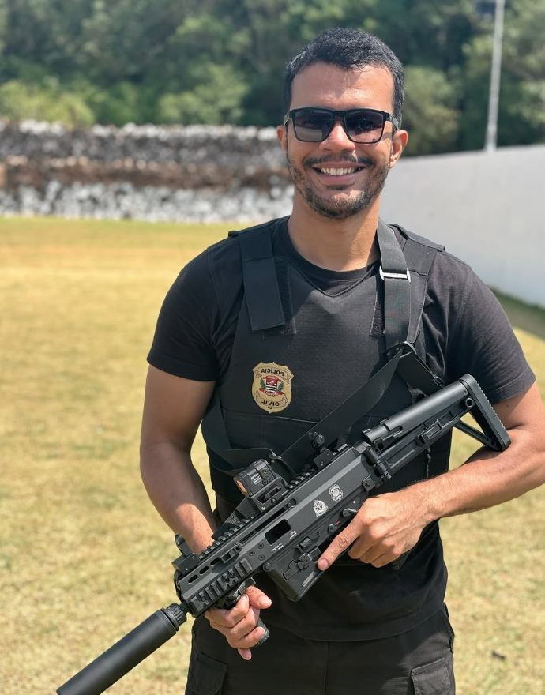

Está começando
Quer entrar para a polícia, mas não sabe por onde começar nem como montar a rotina.
Mentoria com o Delegado José Vitor Soares, da Polícia Civil de São Paulo, aprovado nos concursos de Delegado do Espírito Santo e de São Paulo. Estratégia e acompanhamento para cada fase da prova.

Delegado, investigador, escrivão, Polícia Federal, PRF ou PM: não importa o cargo nem em que ponto você está. O plano parte do seu momento atual.
Quer entrar para a polícia, mas não sabe por onde começar nem como montar a rotina.
Já tem horas de estudo, mas a aprovação na primeira fase não vem.
Passou da primeira fase e precisa vencer as etapas seguintes do concurso.
Acompanhamento de quem já passou por todas as fases da prova, duas vezes.
Cronograma montado para o seu edital e para as horas que você realmente tem.
Revisões periódicas do seu desempenho e ajustes de rota quando necessário.
Orientação para discursivas e peças, onde muita gente fica pelo caminho.
Preparação para as fases seguintes, como prova oral e teste físico, conforme o cargo.
Resumos, modelos e roteiros de revisão usados na preparação.
Dúvidas resolvidas com o mentor, sem intermediários.
Itens de exemplo. Formato e conteúdo a confirmar com o mentor.
Delegado de Polícia do Estado de São Paulo, aprovado nos concursos de Delegado do Espírito Santo e de São Paulo.
Ele já passou por todas as fases da prova de Delegado, duas vezes. Na mentoria, organiza essa experiência num acompanhamento próximo para quem quer construir uma carreira policial.
Histórias de quem saiu da preparação para a posse.
“Eu estudava muito, mas sem direção. Com o plano da mentoria parei de perder tempo com o que não caía e passei na primeira fase no concurso seguinte.”
“Trabalhava o dia inteiro e achava que não ia dar conta. O Vitor montou uma rotina que cabia na minha vida, e foi essa constância que me aprovou.”
“Travei duas vezes na fase escrita. A correção das discursivas mudou meu jeito de escrever, e na terceira tentativa veio a aprovação para Delegado.”
Responda quatro perguntas rápidas. As respostas vão direto para o WhatsApp do Vitor, que avalia o seu caso e responde pessoalmente.
Serve. O plano parte do seu momento atual, seja o primeiro edital ou a reta final.
Não. Ela atende Delegado e outras carreiras policiais, de qualquer estado. O plano é montado a partir do edital que você escolher.
Não existe um mínimo fixo. O plano é feito para as horas que você realmente tem.
Você fala com o Vitor pelo WhatsApp, tira suas dúvidas e recebe as condições para entrar.
Fale com o Vitor e entenda como a mentoria funciona.